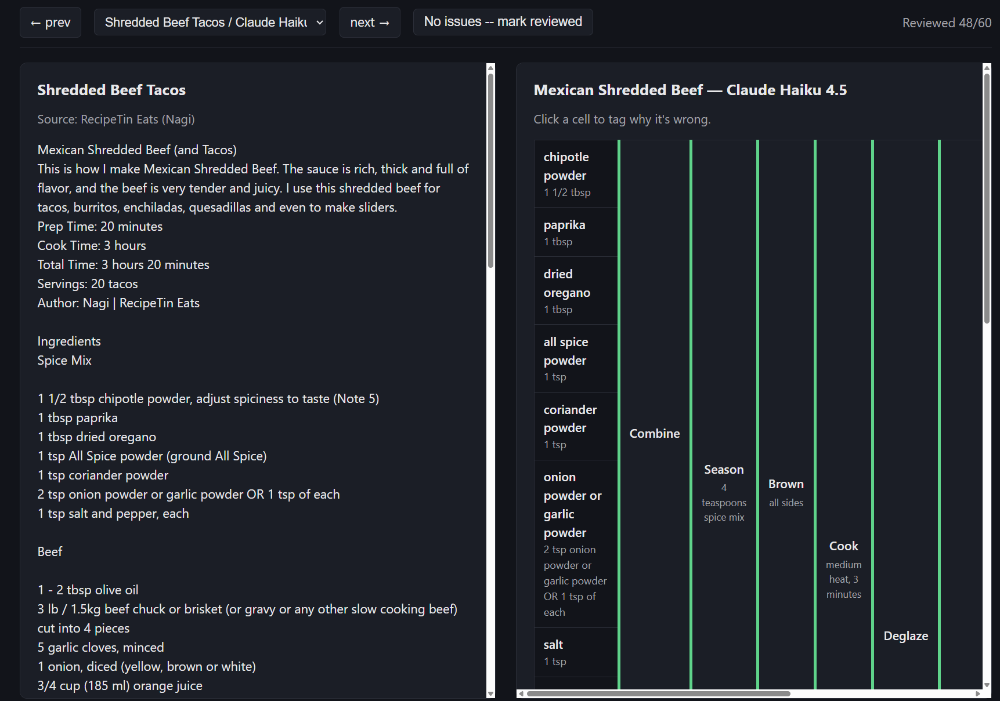
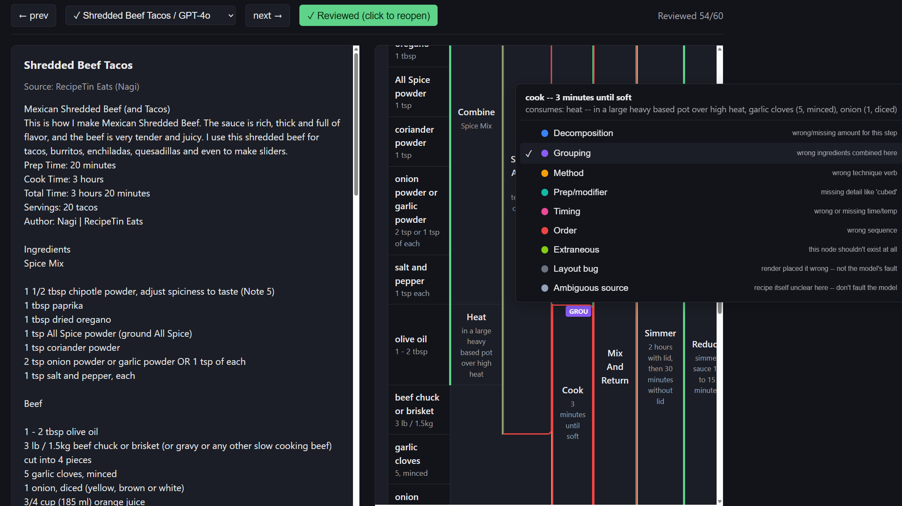

Recipe Flowchart
LLMs can structure your data. Knowing whether they got it right is the actual work.
Turning a recipe into a Gozinto chart (an assembly diagram: ingredients converge through operations into a finished dish) is easy for an LLM to do. What's actually hard is that there's no ground-truth dataset for "is this correct" — only a domain expert's judgment. This project is a worked example of building that eval loop for real: a taxonomy-based human scoring tool, a bug found and fixed and re-validated against the same rubric that found it, an automated judge tried and honestly closed, and a finding that this kind of task doesn't even have one correct answer. The model comparison below is real, but it's supporting material, not the point.
The eval tool
Every one of the 60 runs below was scored by hand against a fixed taxonomy (click a cell, tag why it's wrong, no free text) in a local tool built for exactly this. It isn't part of this static site — it writes real annotation data to disk, which a GitHub Pages site can't do — so here's what it looks like in use instead.


Worked example
One recipe shown in full — the rendered graph plus how all 6 models did on it. Picked for size, not drama: compact enough to read without a lot of scrolling, but still dense with the kind of convergence (multiple ingredients folding into one operation) that makes a Gozinto chart worth looking at. It's also the most visually distinctive input in the set — a photo of my own handwritten, bilingual kitchen notes, with hand-drawn brackets already marking which sub-steps run in parallel.
Handwritten: Choux au Craquelin
Source: My own kitchen notes (bilingual shorthand, hand-drawn dependency brackets)
| brown sugar115g | cream | mix until crumbly | press into rectangle6x8 rectangle | roll out and freeze12x14, 1/8 inch, freeze 5 min | cut rounds18x 2 inch rounds | pipe and top with craquelin | bake400F, 10-12 min | rest with oven off and door open30 min |
| butter115g | ||||||||
| AP flour115g | ||||||||
| salt1/8 tsp | ||||||||
| water235g | boil panade170F | cool | mix in eggs | |||||
| butter84g | ||||||||
| sugar8g | ||||||||
| salt2g | ||||||||
| AP flour128g | ||||||||
| eggs4 large |
| Model | Input tok | Output tok | Cost | Latency | Ingredients | Operations | Merges |
|---|---|---|---|---|---|---|---|
| Claude Haiku 4.5 | 3678 | 923 | $0.0083 | 5.9s | 10 | 8 | 5 |
| Claude Sonnet 5 | 4485 | 1294 | $0.0329 | 14.0s | 10 | 11 | 5 |
| GPT-4o mini | 38125 | 532 | $0.0060 | 8.7s | 10 | 5 | 4 |
| GPT-4o | 2395 | 642 | $0.0124 | 7.0s | 10 | 8 | 3 |
| Gemini 3.5 Flash-Lite | 2553 | 834 | $0.0029 | 3.5s | 10 | 7 | 4 |
| Gemini 3.5 Flash | 2553 | 925 | $0.0122 | 16.6s | 10 | 9 | 6 |
All 10 recipes
Chosen to stress-test specific things, not just to pad the count — genuine parallel prep, raw unedited web-scrape noise, several variations on ingredients that split across steps, and one recipe added specifically to check whether the bug fix above generalized.
- Cooked — Serious Eats
- Baked — NYT Cooking
- Handwritten — My own kitchen notes (bilingual shorthand, hand-drawn dependency brackets)
- Web Scrape — Serious Eats (J. Kenji López-Alt)
- Pancakes — Serious Eats (J. Kenji López-Alt)
- Eggnog — Alton Brown
- Mac & Cheese — Food Network (Alton Brown)
- Potstickers — Damn Delicious
- Shredded Beef Tacos — RecipeTin Eats (Nagi)
- Tikka Masala — Savory Tooth
| Model | Total cost (10 recipes) | Avg latency | Human-flagged issues (60 runs) |
|---|---|---|---|
| Gemini 3.5 Flash | $0.1327 | 23.2s | 7 |
| Claude Sonnet 5 | $0.3370 | 10.9s | 10 |
| Gemini 3.5 Flash-Lite | $0.0332 | 3.0s | 12 |
| GPT-4o | $0.1306 | 5.8s | 18 |
| Claude Haiku 4.5 | $0.0895 | 5.8s | 23 |
| GPT-4o mini | $0.0128 | 9.9s | 33 |
Same recipe, two different (and equally correct) structures
Both of these models scored zero human-flagged issues on the same recipe — and produced genuinely different graphs, the biggest structural gap of any pair that both scored clean. GPT-4o folds "boil water" into the potato-boiling step and does the whole roast as one operation. Claude Sonnet 5 splits both out: its own "boil water" step, and the roast broken into its two real phases (undisturbed, then flip-and-continue). Neither is more correct than the other — they're different, equally valid choices about how finely to decompose a continuous process, which is the real reason this project didn't try to grade against one canonical answer.
GPT-4o
7 operations, 4 merges — scored zero issues
| preheat oven — 450°F (230°C) or 400°F (200°C) if using convection | |||||
| kosher salt | boil10 minutes after returning to a boil | tossuntil a thick layer of mashed potato–like paste has built up | roast20 minutes, then turn and roast 30 to 40 minutes longer | tosswith garlic/rosemary mixture and minced parsley | |
| baking soda1/2 teaspoon (4 g) | |||||
| russet or Yukon Gold potatoes4 pounds (about 2 kg), peeled and cut into quarters, sixths, or eighths | |||||
| extra-virgin olive oil, duck fat, goose fat, or beef fat5 tablespoons (75 ml) | heatuntil garlic just begins to turn golden, about 3 minutes | strain | |||
| fresh rosemary leavessmall handful, finely chopped | |||||
| garlic3 medium cloves, minced | |||||
| freshly ground black pepper | |||||
| fresh parsley leavessmall handful, minced | |||||
Claude Sonnet 5
10 operations, 5 merges — scored zero issues
| preheat oven — 450°F (230°C) or 400°F (200°C) if using convection | |||||||
| water2 quarts (2L) | boil water | add salt, baking soda, and potatoes, boil then simmerabout 10 minutes after returning to a boil | drain and rest potatoesabout 30 seconds | toss potatoes with infused oil, season | spread on baking sheet and roast20 minutes, without moving | flip, shake, and continue roasting30-40 minutes longer, until deep brown and crisp | toss with reserved garlic/rosemary and parsley, season |
| kosher salt2 tablespoons (about 1 ounce; 25g), plus more to taste | |||||||
| baking soda1/2 teaspoon (4 g) | |||||||
| russet or Yukon Gold potatoes, peeled and cut into quarters, sixths, or eighths4 pounds (about 2 kg) | |||||||
| extra-virgin olive oil, duck fat, goose fat, or beef fat5 tablespoons (75 ml) | combine and heat oil with aromaticsmedium heat, about 3 minutes, until garlic golden | strain oil from solids | |||||
| fresh rosemary leaves, finely choppedsmall handful | |||||||
| garlic, minced3 medium cloves | |||||||
| freshly ground black peppera few grinds, plus more to taste | |||||||
| fresh parsley leaves, mincedsmall handful | |||||||